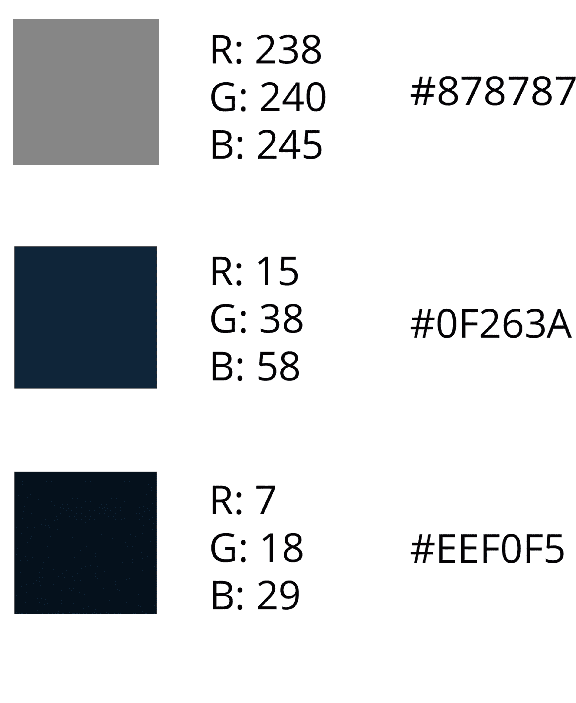

Descripción
Utilicé esta paleta de colores fríos y sin sa-turación porque son los colores que más destacan en la mayor parte de mi capítulo.

Opens Sans
Elegí esta tipografia para utilizar en los textos de mi página porque sigue el hilo de minimalismo y foturista que busco representar en mi sitio.
ABCDEFGHIJKLMNÑOPQRSTUVWXYZ
abcdefghijklmnñopqrstuvwxyz
0123456789
Poppins
Elegí esta tipografía para los títulos porque es sencilla y moderna y, además, queda en armonía con la tipografía Opens Sans.
ABCDEFGHIJKLMNÑOPQRSTUVWXYZ
abcdefghijklmnñopqrstuvwxyz
0123456789